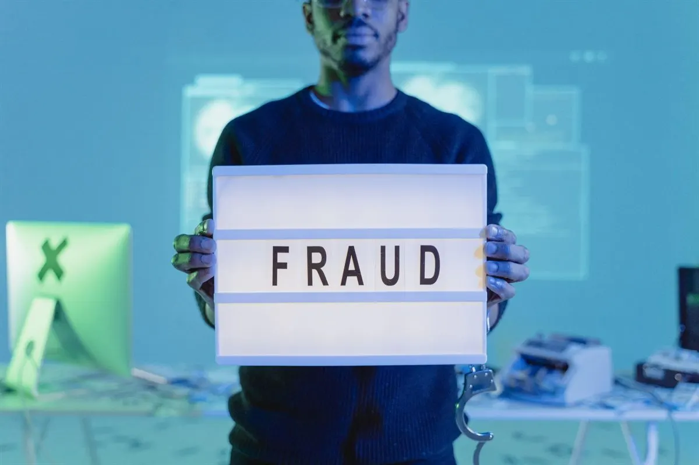

Matriz de riscos de fraude
Mapeamos os esquemas possíveis em cada processo, a probabilidade e o impacto de cada um e os controles que existem (ou faltam). Como funciona a matriz.
Ajudamos empresas a descobrir onde estão expostas a fraudes, a desenhar controles que funcionam no dia a dia e a estruturar a governança que mantém tudo de pé. Projetos sob medida, proporcionais ao porte e ao risco de cada organização.
Solicite uma consultoriaA maior parte das fraudes internas não é descoberta por sistemas sofisticados, e sim porque alguém percebe algo estranho ou porque um controle simples finalmente é aplicado. Uma consultoria ajuda a chegar lá antes do prejuízo. Alguns sinais de que é a hora:
Mapeamos os esquemas possíveis em cada processo, a probabilidade e o impacto de cada um e os controles que existem (ou faltam). Como funciona a matriz.
Código de conduta, políticas e controles alinhados à Lei Anticorrupção e ao Decreto nº 11.129/2022, no tamanho certo para a empresa. O que a lei pede.
Desenho do canal, fluxo de triagem e apuração e roteiro de investigação interna, com sigilo e preservação de provas. Canal de denúncias e investigação interna.
Segregação de funções, conflito de interesses, due diligence de terceiros e validação de dados bancários contra o golpe do falso fornecedor. Segregação de funções.
Regras de alerta, indicadores e rotina de revisão para encontrar pagamentos, cadastros e reembolsos fora do padrão. Como montar as regras.
Programas práticos para liderança, áreas expostas e todos os colaboradores, com casos reais e simulações. Conheça os treinamentos.

1. Diagnóstico. Entendemos seus processos, controles e pontos de exposição a fraudes.
2. Plano de ação. Priorizamos os riscos e definimos as medidas de governança, controle e treinamento adequadas.
3. Implementação. Apoiamos sua equipe na adoção das medidas e na capacitação dos colaboradores.
4. Acompanhamento. Avaliamos periodicamente a eficácia dos controles e ajustamos o que for necessário.
Quer um ponto de partida? Faça a autoavaliação de maturidade gratuita e traga o resultado para a primeira conversa. Para entender o tema como um todo, leia o guia completo sobre fraude interna.
Empresas de todos os portes. Em empresas menores, o foco costuma ser em poucos controles de alto impacto, como dupla aprovação de pagamentos e conferência de dados bancários; em empresas maiores, entram a matriz de riscos, o monitoramento transacional e o programa de integridade completo.
Depende do escopo. Um diagnóstico focado em um processo é mais curto que a estruturação de um programa de integridade. O escopo e o prazo são definidos na proposta, depois de uma conversa inicial para entender a necessidade.
A auditoria verifica, em um momento, se os controles e os números estão corretos. A consultoria antifraude ajuda a desenhar e implantar os controles, a governança e a cultura que evitam e detectam fraudes de forma contínua. As duas se complementam.
Sim. Ajudamos a organizar a investigação interna, com preservação de provas, sigilo e respeito aos direitos dos envolvidos, trabalhando em conjunto com o jurídico da empresa quando necessário.
Depende. A Lei nº 14.133/2021 exige programa de integridade do vencedor de contratações públicas de grande vulto, e vários estados e municípios têm exigências próprias. Mesmo quando não é obrigatório, o programa reduz riscos e pode atenuar sanções previstas na Lei Anticorrupção.
Juntos, vamos fortalecer a integridade da sua empresa.